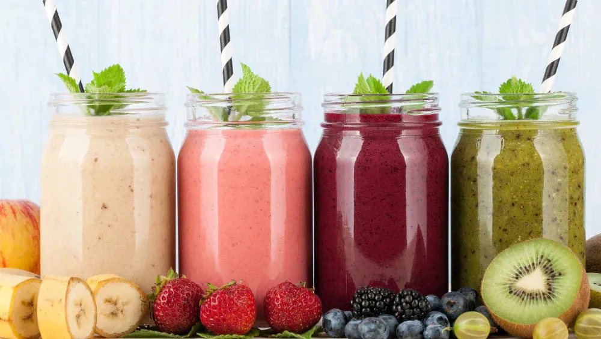

Élixirs naturels · 4 min de lecture
Élixir aux Protéines Naturelles : le rituel fondamental pour nourrir les muscles, l’énergie et la vitalité globale

Introduction
Les protéines sont souvent associées au sport, à la performance ou à la musculation. Pourtant, leur rôle va bien au-delà des muscles.
Elles sont les briques de base du corps humain : hormones, enzymes, neurotransmetteurs, tissus, immunité… tout repose sur un apport protéique de qualité.
Le problème n’est pas le manque de protéines, mais la mauvaise qualité de celles que l’on consomme : poudres ultra-transformées, additifs, édulcorants, isolats agressifs pour la digestion.
Dans cet article, je te présente un élixir naturel à base de protéines 100 % naturelles, conçu comme un rituel intelligent, digestible et profondément nourrissant, avec une alchimie optimale pour la santé, l’énergie durable et la récupération.
👉 Je tiens à vous rappeler une règle d’or que j’aime beaucoup et qui guide mes choix au quotidien : si la nature ne l’a pas créé, ne le buvez pas.
Le problème
Beaucoup de personnes souffrent aujourd’hui de :
fatigue persistante,
fonte musculaire ou difficulté à récupérer,
fringales fréquentes,
perte de tonus,
digestion perturbée par des protéines industrielles.
Les protéines sont souvent :
trop raffinées,
mal assimilées,
dénaturées par les procédés industriels.
Le corps n’a pas besoin de plus de protéines,
il a besoin de meilleures protéines, complètes, vivantes et digestibles.
La promesse
L’élixir aux protéines naturelles agit comme un nourrissant cellulaire profond.
Il soutient la masse musculaire, la récupération, l’énergie et la satiété, sans agresser la digestion ni créer d’inflammation.
Ce n’est pas un shaker de performance artificielle.
C’est un rituel de construction durable du corps.
Les bénéfices
Une meilleure récupération physique
Une énergie plus stable dans la journée
Un soutien musculaire et nerveux
Une satiété naturelle (moins de fringales)
Une digestion plus confortable
🌿 Pourquoi ce remède est efficace
Les protéines naturelles, issues d’aliments entiers, apportent :
des acides aminés complets,
des minéraux cofacteurs,
des fibres et enzymes naturelles.
Contrairement aux poudres isolées, elles travaillent en synergie avec l’organisme.
Dans cet élixir, les protéines proviennent de sources végétales intelligemment combinées :
graines,
oléagineux,
légumineuses douces.
Associées à des bons gras et à des minéraux, elles deviennent :
plus assimilables,
plus rassasiantes,
plus efficaces sur le long terme.
👉 Le corps reconnaît ce qui est vivant.
💪 Les bienfaits de l’élixir aux protéines naturelles
Soutien de la masse musculaire
Indispensable à tout âge, pas seulement pour les sportifs.Amélioration de la récupération
Les acides aminés soutiennent la réparation cellulaire.Énergie durable
Moins de pics, plus de stabilité.Soutien du système nerveux
Les protéines participent à la fabrication des neurotransmetteurs.Meilleure gestion de l’appétit
La satiété est plus longue et naturelle.
🍶 La recette de l’Élixir Protéines Vivantes & Vitalité
Ingrédients (alchimie optimale)
1 cuillère à soupe de graines de chanvre décortiquées
1 cuillère à soupe de graines de courge
1 cuillère à soupe de purée d’amandes ou de tahini
250 ml de lait végétal (amande, chanvre ou avoine)
½ banane mûre (optionnelle)
Une pincée de cannelle
Une pincée de vanille naturelle
1 cuillère à café de graines de chia trempées (optionnelle)
Pourquoi cette synergie fonctionne ?
Le chanvre apporte des protéines complètes.
Les graines de courge soutiennent muscles et immunité.
Les oléagineux fournissent bons gras et minéraux.
Le lait végétal facilite l’assimilation.
La banane soutient l’énergie musculaire.
La cannelle stabilise la glycémie.
Les chia prolongent la satiété.
Préparation
Place tous les ingrédients dans un blender.
Mixe jusqu’à obtenir une texture lisse.
Bois immédiatement pour préserver les nutriments.
⏰ Comment l’utiliser
À consommer 1 fois par jour, idéalement :
après une activité physique,
ou en remplacement d’un petit-déjeuner léger.
Peut être utilisé quotidiennement.
Ajuste les quantités selon ton niveau d’activité.
👥 À qui s’adresse ce rituel
Aux personnes actives ou sportives
À ceux qui manquent d’énergie ou de tonus
Aux personnes souhaitant préserver leur masse musculaire
Aux végétariens ou flexitariens
À toute personne cherchant une protéine propre et naturelle
⚠️ Précautions
Mastique bien si tu ajoutes des graines entières.
Adapte les quantités en cas de digestion sensible.
Choisis des ingrédients bio et non transformés.
En cas de pathologie rénale, demande un avis médical.
🌱 Conclusion & appel à l’action
L’élixir aux protéines naturelles est une base de construction du vivant.
Il rappelle que le corps ne se renforce pas avec des poudres chimiques, mais avec des aliments intelligents, complets et respectueux.
Construire de l’énergie, du muscle et de la vitalité, c’est d’abord bien nourrir ses fondations.
👉 Si la nature ne l’a pas créé, ne le buvez pas.
Je partage régulièrement des élixirs, rituels et ressources bien-être pour t’aider à bâtir un corps fort, fonctionnel et durable, naturellement.
📚 Je suis auteur bien-être sous le pseudo Chest0 JM.S., mes ouvrages sont disponibles sur Amazon.
🔗 Retrouve tout mon univers ici :
👉 https://chest0.fr
👉 Si tu veux aller plus loin, découvre aussi notre
« Travail assis : pauses actives »
👉 Créez votre planning de pauses gratuit : chest0.fr/outils/pauses-actives/
« Journal du sommeil »
👉 Tenez votre journal du sommeil sur 7 jours, gratuitement : chest0.fr/outils/journal-sommeil/
« Les 20 aliments des centenaires » et « Microbiote intestinal »
👉 Mes livres de recettes naturelles, élixirs et détox : chest0.fr/pages/livres.html
« 4 habitudes à observer au quotidien »
👉 Faites le point sur vos habitudes avec l'outil gratuit : chest0.fr/outils/equilibre-quotidien/
Plus de 40 recettes d'élixirs dans les livres Chest0.
Voir les livres